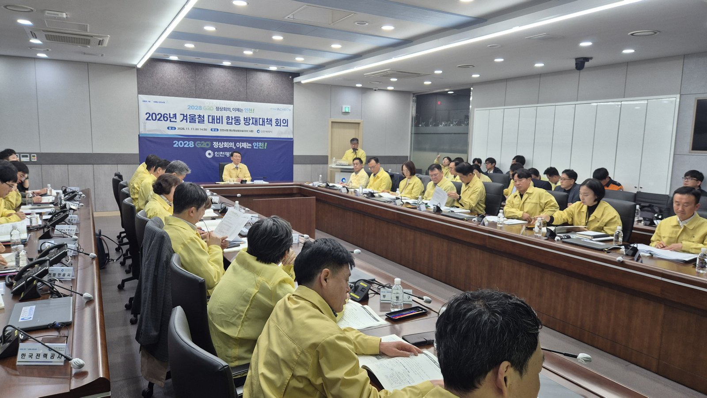

인천 제설 취약구간 1년 새 118곳에서 252곳, 행정개편 뒤 첫 겨울
제설제 2만6165톤·한파쉼터 931곳, 15일부터 넉 달 대책기간
AI경제저널=김갑봉 기자 | 인천시(시장 박찬대)가 오는 15일부터 내년 3월 15일까지 넉 달을 겨울철 자연재난 대책기간으로 정했다고 지난 11일 밝혔다. 한파특보가 나오면 밤과 주말, 휴일에도 24시간 여는 한파 응급대피소 19곳을 운영한다. 군·구가 10곳에서 11곳으로 바뀐 뒤 맞는 첫 겨울이다.

제설제 2만6165톤과 응급대피소 19곳
시는 지난 11일 시 재난안전상황실에서 민·관·군·경 합동 방재대책회의를 열었다. 회의에는 기관 24곳이 참석했다. 시와 군·구 11곳, 인천시교육청, 인천경찰청, 육군 제17보병사단, 인천교통공사, 인천시설공단 등이다.
시는 제설제 2만6165톤을 확보했다. 지난해보다 715톤 많다. 제설장비 869대와 제설인력 1227명도 갖췄다. 눈 예보가 나오면 제설제를 미리 뿌린다.
제설 취약구간 252곳에는 장비와 인력을 미리 둔다. 결빙 취약구간 113곳과 적설 취약 시설물 91곳도 따로 관리한다.
한파쉼터는 931곳, 안심숙소는 20곳이다. 방풍시설과 온열의자 같은 한파 저감시설은 1874곳이다. 쉼터 위치는 국민재난안전포털·안전디딤돌·네이버 지도에 더해 카카오 지도와 티맵에서도 안내한다.
생활지원사 1023명이 취약노인 1만6262명과 독거노인 9370명의 안부를 확인한다. 거리 노숙인이 모이는 곳은 현장에서 보호하고, 쪽방 주민은 건강을 점검한다.
시는 기상청 전망을 근거로 들었다. 기상청이 지난 10월 23일 낸 3개월 전망에서 11월 강수량이 평년보다 많을 확률은 50%, 12월은 40%다. 기상청은 강한 엘니뇨가 이어질 가능성이 높고 12월에 최성기가 온다고 봤다.
김성중 행정부시장은 "올겨울은 강수가 많아 기온이 떨어지면 언제든 대설로 이어질 수 있는 만큼 방심 없이 선제 제설에 나서달라"고 당부했다.
올해 겨울 대책이 군·구와 주민에게 말하는 것
지난해 같은 대책과 견주면 세 가지가 달라졌다.
제설 취약구간은 시가 지난해 11월 12일 낸 대책에서 118곳이었다. 올해는 252곳으로 2.1배다(AI경제저널 계산). 2024년 대책의 「제설 취약 지역」은 97곳이었다. 시 발표에는 제설 취약구간이 늘어난 까닭이 없다.
적설 취약 시설물은 84곳에서 91곳으로 늘었고, 결빙 취약구간은 113곳으로 같다. 한파쉼터는 2024년 825곳, 지난해 890곳, 올해 931곳이다.
인천 행정체제는 지난 7월 1일 2군 8구에서 2군 9구로 바뀌었다. 제물포구·영종구·서해구·검단구가 새로 출범했다. 시는 주요관리구간 301곳에 책임담당자를 정했다. 도로 경계구간은 맞닿은 기관이 함께 제설한다.
김 부시장은 "행정체제 개편에 따른 경계구간 제설 공백을 차단하고 취약계층 한파 보호에도 세심한 주의를 기울여야 한다"고 말했다.
「재난정보학회지」에 실린 Heejae Kim 등의 2017년 논문은 지자체 229곳의 도로 제설 시나리오를 분석했다. 논문은 "대부분의 지자체에서는 예측 소요량에 비해 실제 보유량이 적은 것으로 나타났다"고 밝혔다.
연구진은 지자체마다 최소 자체 보유량을 정하자고 제안했다. 나머지는 민간 계약이나 지역별 제설 거점 창고로 채우는 방식이다. 시는 12월부터 내년 2월까지 군·구 보건소 11곳, 응급의료기관 23곳과 한랭질환 감시체계를 운영한다.
참고문헌
- "인천시, 겨울철 대설·한파 대비 총력…'시민 안전 최우선'", 인천광역시 자연재난과, 2026.11.11, https://www.incheon.go.kr/IC010205/view?repSeq=DOM_0000000015948626
- "인천시, 겨울철 대설·한파 재난대비 총력'시민 안전 최우선'", 인천광역시 자연재난과, 2025.11.12, https://www.incheon.go.kr/IC010205/view?repSeq=DOM_0000000013511550
- "인천시, 겨울철 대설·한파 재난대비 총력 ...현장 중심 사전대비 체계 구축으로 시민불편 최소화", 인천광역시 자연재난과, 2024.11.13, https://www.incheon.go.kr/IC010205/view?repSeq=DOM_0000000011133371
- "3개월 전망(2026년 11월~2027년 1월)", 기상청, 2026.10.23, https://www.weather.go.kr/w/repositary/xml/fct/mon/fct_mon3_108_20261023.pdf
- "31년 만의 인천 행정체제 개편, 시민과 함께 출발", 인천광역시 기획총괄과, 2026.06.08, https://www.incheon.go.kr/IC010205/view?repSeq=DOM_0000000014871020
- "도로 제설 시나리오별 소요 제설장비 및 차량 추정에 관한 연구", Heejae Kim·Sunyoung Kim·Geunyoung Kim, 「재난정보학회지」 13권 2호 199~212쪽, 2017, https://doi.org/10.15683/kosdi.2017.06.30.199
[사진 출처]
- [사진1] 인천광역시 보도자료 「인천시, 겨울철 대설·한파 대비 총력…'시민 안전 최우선'」(2026.11.11) 붙임 현장사진 https://www.incheon.go.kr/IC010205/view?repSeq=DOM_0000000015948626
관련기사
- 인하대, 이승만 동상 복원위 출범식·김문수 워크숍 모두 '불허'
- 12·3내란 옹호 김문수 인하대 특강 '발칵'…"극우 행사 반대"
- [가계부채] 다시 늘어난 빚 6조4,000억원과 0.61%포인트 오른 대출 이자
- 가계대출 한 달 새 6조4000억원 증가, 신용대출 다시 늘어
저작권자 © AI경제저널 무단전재 및 재배포, AI학습 및 활용 금지